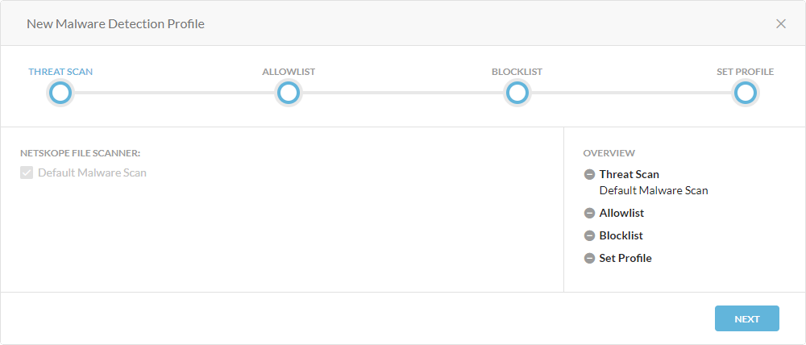
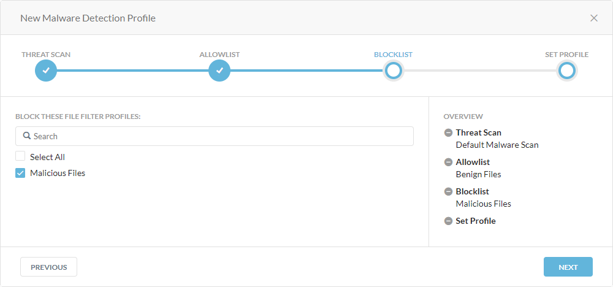

Creating a Malware Detection Profile
You can extend the default Netskope malware scan by creating custom malware detection profiles. In the malware detection profile, you can select the file profile as an allowlist or a blocklist. For example, you can include known malicious hashes sourced from other intelligence sources in the blocklist. You also can add known good files (e.g., proprietary content specific to the organization) to the allowlist so Netskope flag them as suspicious.
To create a malware detection profile:
Go to Policies > Threat Protection.
In the Malware Detection Profiles tab, click New Malware Detection Profile.
Under Threat Scan, click Next. The Netskope malware scan is selected by default. You can't modify this field.
Under Allowlist, select the file profile that's associated with the files you want to allow in your organization. You also can search for a profile.

Click Next.
Under Blocklist, select the file profile that's associated with the files you want to block in your organization. You also can search for a profile.
Click Next.
Under Set Profile, enter a name for the profile.

Click Save Malware Detection Profile.
Click Apply Changes.
You can select the custom malware detection profile when configuring the Real-time Protection policy.